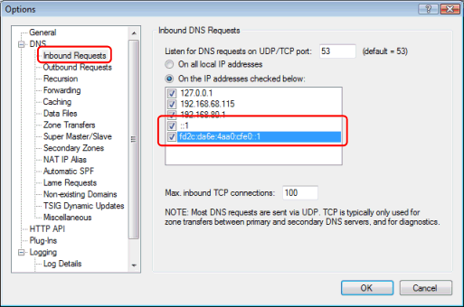
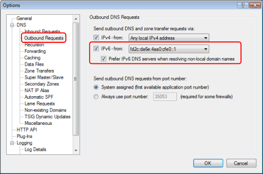
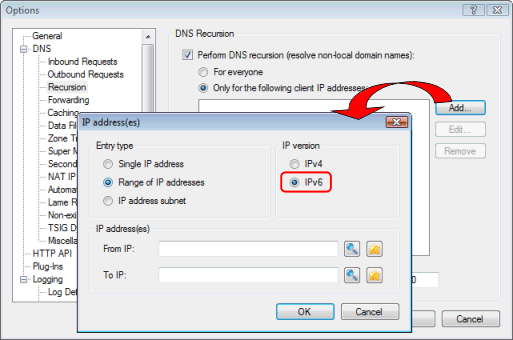
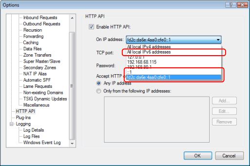
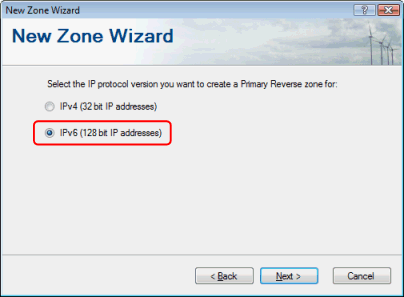
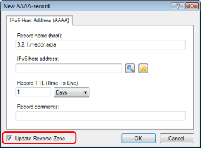
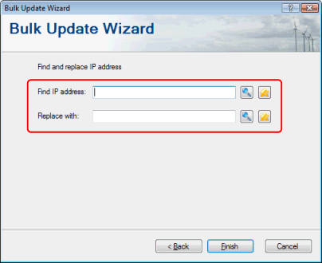

Why is IPv6 important?
- The Internet is predicted to run out of IPv4 addresses by 2011.
- Windows Vista and 2008 have IPv6 enabled by default.
- Most new routers and other new network devices are IPv6 enabled.
Anywhere in Simple DNS Plus that you can enter or select an IP address, you can now use both IPv4 and IPv6 addresses.
On dual-stack (IPv4 / IPv6) computers you can mix and match IPv4 and IPv6 any way you like - for example listen for DNS requests on an IPv4 address and forward to another DNS server over IPv6.
In the Options dialog / Inbound DNS Requests, it now also lists local IPv6 addresses:

And in the Options dialog / Outbound DNS Requests section, you can select which IP versions to use when talking to other DNS servers, and which is preferred (tried first):

Anywhere there is a list of IP addresses/ranges/subnets, for example for DNS recursion, you can enter either IP version:

The HTTP API can now also be enabled on "All local IPv6 addresses" or a specific IPv6 address:

When creating a new reverse zone, you can now select either a IPv4 or IPv6 reverse zone:

Just like the with the A-record, :the AAAA-record properties dialog now has an "Update Reverse Zone" option:

The Bulk Update Wizard "Find and replace IP address" now also works with IPv6 addreses:
